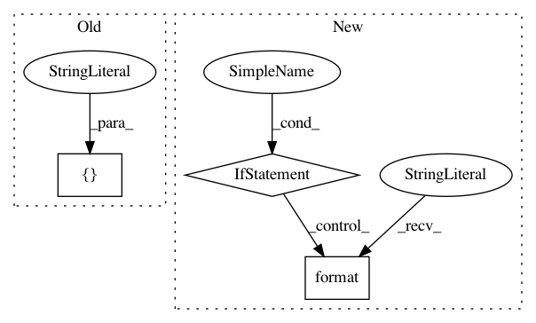

7bf44d7608c6d91f45695d1bb1d910a440aa449c,luminoth/tools/cloud/gcloud.py,,build_package,#Any#Any#,74
Before Change
cwd=package_path, stdout=devnull, stderr=devnull
)
subprocess.call(
[
"python", "setup.py", "build", "--build-base", temp_dir,
"--build-temp", temp_dir, "sdist", "--dist-dir", output_dir
],
cwd=package_path, stdout=devnull, stderr=devnull
)
subprocess.call(
After Change
os.path.join(os.path.realpath(__file__), "..", "..", "..", "..")
)
setup_file = os.path.join(package_path, "setup.py")
if os.path.isfile(setup_file):
click.echo(
"Found `setup.py` file in "{}". "
"Using it instead of shim.".format(package_path))
else:
//
// Option 2: generate a `setup.py` file that can install current version
// of Luminoth.
//
package_dir = temp_dir
setup_file = os.path.join(package_dir, "setup.py")
with open(setup_file, "w") as f:
f.write(GCP_TRAINER_PACKAGE_SETUP)
click.echo("Generating "{}" for installing luminoth=={}.".format(
setup_file, luminoth.__version__
))
devnull = open(os.devnull, "w")
subprocess.call(
["python", "setup.py", "sdist", "--dist-dir", output_dir],
cwd=package_path, stdout=devnull, stderr=devnull,
In pattern: SUPERPATTERN
Frequency: 4
Non-data size: 3
Instances
Project Name: tryolabs/luminoth
Commit Name: 7bf44d7608c6d91f45695d1bb1d910a440aa449c
Time: 2018-11-06
Author: dekked@gmail.com
File Name: luminoth/tools/cloud/gcloud.py
Class Name:
Method Name: build_package
Project Name: microsoft/nni
Commit Name: efa4e31c4b1da4a4a987c0280e1fc3b8adf5c004
Time: 2020-11-20
Author: Quanlu.Zhang@microsoft.com
File Name: nni/retiarii/codegen/pytorch.py
Class Name:
Method Name: graph_to_pytorch_model
Project Name: microsoft/nni
Commit Name: 7d69e3d57c0fdc4d79f1ca1cf47162797baee955
Time: 2018-12-05
Author: yann@microsoft.com
File Name: deployment/pypi/setup.py
Class Name:
Method Name:
Project Name: microsoft/nni
Commit Name: c29a0cc338926fc5cee287bf1f6596dc3094a3a1
Time: 2019-03-25
Author: shinaiyang@pku.edu.cn
File Name: test/remote_docker.py
Class Name:
Method Name: start_container